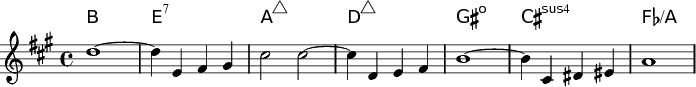
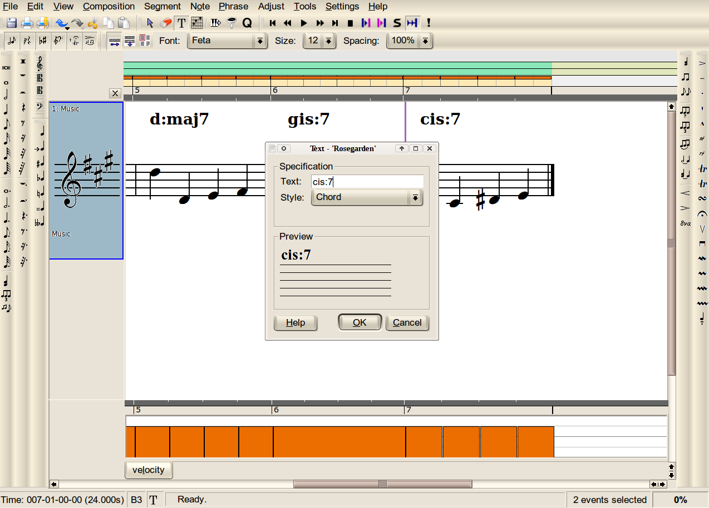
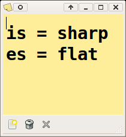
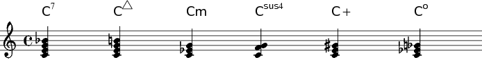
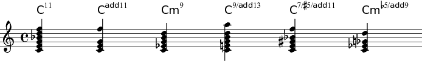
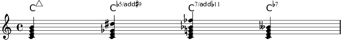
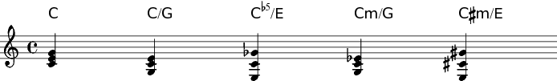

Lead Sheets with LilyPond
Copyright © 2008 Shelagh Manton
This tutorial was written with a pre-release version of Rosegarden 1.7.2
LilyPond Chord Names Styles for your Leadsheets

Lead sheets are useful for learning the melody and words of a song as well as for giving you hints on chords for guitar playing or for other musicians who can improvise with chords.
Rosegarden can easily do lead sheets using the text tool with chords options in the notation editor.
Rosegarden has it's own native style of naming chords which is a simple text in a nice font placed over the relevant note in the staff. If you wish to use the default LilyPond Ignatzek style chord names you can do that too. But you must use the LilyPond syntax to do so.

LilyPond Recipe for Chords
- Use letters from
a–g. So far nothing scary, or unexpected.
 - Next put in any pitch shifting notation. This would be
isfor sharp andesfor flats. Now this is something which needs explaining! LilyPond uses Dutch notation terms by default. As the original programmers are Dutch, this is not too surprising. But because of this, Rosegarden also uses the Dutch terminology. You may need to write it on a sticky note and put it somewhere where you can always see it. - If you need double sharps or flats, just write out the note like this
cisisorcesesI have included the chords as LilyPond sees them in the pictures to give you a better idea of whether the syntax produces the chord you meant to produce. - Now comes the interesting stuff. If you want to show diminished or minor chords or any modification such as including the seventh note in a chord you will now need to write a
:semicolon. So far our chord could look like thiscis:. - Simply put your modification after the colon like so;
c:7,c:maj7,c:m,c:sus4,c:aug, orc:dim

But wait there's more!
- You may need to add on extra notes to your chords. This is how its done. Note the dot if you just want to add only the extra note and not all the ones in between. This is what they look like;
c:11,c:5.11,c:m9,c:13,c:aug2.7, orc:dim5.9.

- If the notes you want to add are raised or lowered? This is how to do it. Also if you wish to raise or lower a note already in your chord just name it with its number and
+and-it to your heart's content.c:7+,c:5-.9+,c:5.11-, orc:7-

- and finally, if you want to show an inversion you can do this;
cc:/gc:5-/ec:m/gcis:m/e

- Some of you may have read up on chordname syntax on your own. In Rosegarden you do not need to show the duration of the chord as you will be attaching it to a note and LilyPond will not need to work out the spacings for the chordname itself. So you do not need to worry about durations.